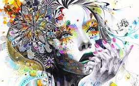

Доступна кожному.
- Не має значення скільки Вам років.
- Не важливо де ви зараз знаходитесь – дома, в парку, в аеропорту, в черзі до лікаря.
- Не важливо. Вмієте ви малювати чи ні.
- Це зовсім не впливає на результат.
Вам потрібні тільки: чистий лист, маркер або олівець.
В більш ніж 30% людей зміни відбуваються під час малювання. Це не диво, сам принцип побудований таким чином.
Зазвичай важко працювати над собою, прикладати зусилля і “включати” силу волі. Інша річ – малювати і залучатися до процесу творчості. І чим глибше ви занурюєтеся, тим краще результат.
Нейрографіка важлива для тих, у кого немає хобі, або хто хронічно сидить за комп’ютером. Почавши малювати, в житті цих людей з’являється помітно більше емоцій і спонтанності.
Для багатьох Нейрографіка – це хобі на багато років.
Алгоритми універсальні та здатні вирішувати будь-яке завдання.